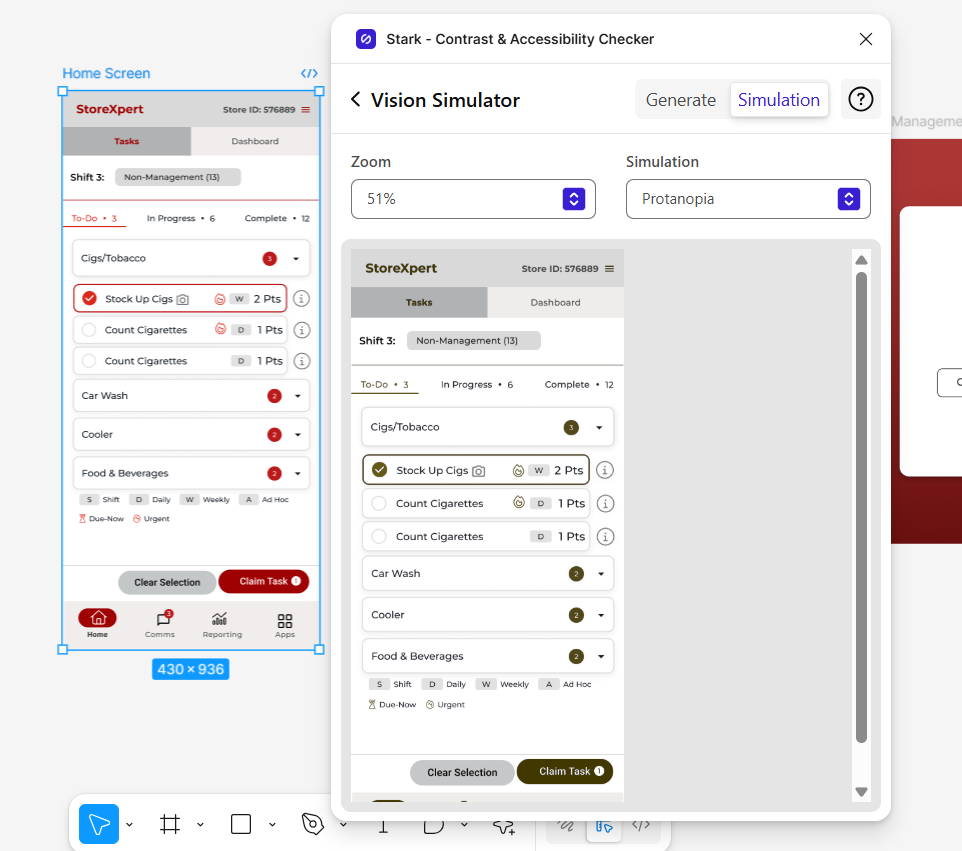

Project Overview
A global convenience store chain with 15,000+ locations was limited by a manual, single-platform Task Management systemthat lacked the scalability and cross-platform flexibility. Store associates and managers faced poor usability, fragmented communication, and disconnected workflows—leading to low engagement, inconsistent execution, and delayed decisions.
Team: 1 Senior UX/UI Designer + 2 Mid-Level UX/UI Designers
Duration: Continuous collaboration over 6 months.

Key Results & Impact
40% Increase in User Satisfaction
Validated through cross-platform consistency and continuous weekly feedback sessions.
Faster Decision-Making
Achieved by streamlining communication and task management, leading to smoother workflows.
20% Reduction in Design & Development Time
Enabled by implementing a scalable, modular design system optimized for multi-device compatibility.
From Pitch to Execution
Acknowledged for leadingfoundational UX researchand proposing strategic enhancements that significantly contributed to winning the project.Took charge of end-to-end design process—scoping redesigns, refining workflows, and building a modular design system. Collaborated closely with the Technology Head and Business Analyst to align with business goals, while onboarded new designers to ensure a seamless transition.
Goal Definition
To design a scalable, cross-platform solution that unifiestask management, streamlines communication, and improvesusability across all store roles. Initial analysis of the existing system revealed low task engagement, UI clutter, device inconsistencies, and workflow inefficiencies. These insights informed the implementation ofa modular design system and responsive layouts tailored for Web, Kiosk, iPad, and Mobile platformsboosting task efficiency, enabling real-time decision-making, and increasing store team engagement.
Framing pain points into actionable goals.
System Analysis & Gap Identification
| Issue Identified | Principle Violated | Impact | Occurrence | Severity |
|---|---|---|---|---|
| Header cluttered with excessive content | Aesthetic and Minimalist Design | Moderate | Frequent | 55% |
| Inconsistent presentation of the same information | Consistency and Standards | High | Frequent | 75% |
| No back navigation option on login screen while switching stores | User Control and Freedom | Moderate | Occasional | 50% |
| Lack of user notification while switching views | Visibility of System Status | Moderate | Frequent | 65% |
| Action feedback not visible post completion | Feedback and Visibility | High | Frequent | 85% |
| Error messages lack actionable guidance | Help and Documentation | High | Frequent | 70% |
Visual Concept Translation
Wireframes and high-fidelity designs were rapidly developed to effectively communicate the vision and design possibilities to the team, enabling quick alignment and feedback.
Proposal-Ready Walkthrough
Delivered a walkthrough video that effectively highlighted the need for a system revamp, showcasing user pain points and strategic opportunities.It became a key part of the RFP pitch and waswell-received by both client and internal teams.
This video has been selectively edited to comply with NDA guidelines.
Project Kickoff & User Understanding
Following the successful proposal walkthrough, the project moved into execution. The first step was aligning with stakeholders and diving deeper into user roles, needs, and pain pointsthrough persona development.
.
To ensure decisions were rooted in real user needs, personas were developed for different associate levels.
Design Strategy & Information Architecture
A focused design strategy was defined byidentifying core tasks and prioritizing key functionalitiesthat required simplification or enhancement. For Phase One,the goal was to bring in minimal yet impactful enhancementswhile keeping the existing system structure largely intact. Clear user flows were mapped, and a comprehensive information architecture was developed to ensure intuitive navigation, logical content grouping, and efficient task execution across the system.
.User Grouping Snapshot from UXtweak
User Flow for Role-Based Access generated using Whimsical
Building a Scalable Design System
A modular design systemwas rapidly built usingMaterial UI in Figma.The system was aligned with brand guidelinesand included reusable assets and componentstailored to the application’s structure and user roles. Components were designed responsively—adjustingfont sizes, spacing, and dimensions to scale effectively across multiple devices.
.A quick look at the scalable design system built for cross-platform consistency and brand alignment.
Iterative Design & Feedback Loop
Given the fast-paced timeline,designs were continuously refined through weekly internal reviewsto align with technical feasibility and scope limitations. Close collaboration with the Business Analyst and Development Teams ensured rapid iteration without compromising quality—aligned with brand guidelinesenabling smooth, fast-track collaboration while preventing scope creep.
.Comparison of ineffective vs. improved message handling
Accessibility Optimization and Compliance
Accessibility optimization was achieved by adhering toWCAG 2.1 AA standards. Color contrast ratios were maintained above 4.5:1 to ensure legibility for all users. Focus indicators were incorporated to support keyboard navigation, and semantic text hierarchywas applied for improved screen reader compatibility.
. "Vision simulator plugins used to ensure color deficiency test compliance
Prototyping & Handoff
Interactive prototypeswere developed for mobile, desktop, kiosk, and iPad to maintain consistent behavior and responsive layouts. The final designs included detailedinteraction patterns, accessibility considerations, and annotated specsfor smooth development. Additionally, tab navigation structures and ARIA labels were also defined to ensure accessibility compliance and support an inclusive user experience.
.Snapshot of interactive prototypes created for iPad device.
Challenges & Solutions
Key Takeaways
- Built a scalable design system that enhanced usability and efficiency across platforms.
- Emphasized continuous iteration athrough feedback loops and usability testing.
- Future-ready roadmap includes AI-driven features and smarter task management.
– Steve Jobs